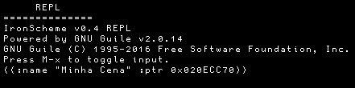

Verificando a inserção da cena
Ao compilar e executar o jogo, você vai perceber que absolutamente nada está aparente na tela. Isso é normal, mas nossa cena já foi adicionada à lista e podemos verificar isso através de uma ferramenta muito importante: o REPL. Entraremos realmente na forma como o REPL funciona mais tarde mas, por enquanto, veremos como verificar quantas e quais cenas estão inseridas no nosso gerenciador de cenas.
Abra o programa compilado. Você será agraciado automaticamente com a tela preta que já conhece.
Agora, então, faça com que o console de debug seja exibido: pressione o atalho Ctrl + X (de agora em diante, referenciaremos este atalho da mesma forma que é referenciado em um editor de texto como o Emacs: na forma C-x).
Ao fazer isso, será exibido um pequeno console com algumas informações gerais, como tamanho da janela, FPS, status de VSync e etc, chamado "Watcher". Pressione novamente C-x, e este console será substituido por outro, chamado "REPL".
O REPL é sempre iniciado com uma mensagem de boas-vindas da linguagem a ser usada; verifique se a linguagem em questão é IronScheme ou IronLua, precisaremos desta informação a seguir.
Na borda inferior da tela, um outro mini-console terá alguns símbolos com um número de três algarismos. Este é o buffer de entrada de comandos do REPL. Use o atalho Alt + X (a partir daqui, referenciaremos como M-x no estilo Emacs) para alternar a digitação de comandos neste buffer entre ligada e desligada. Você poderá, então, a seguir, digitar comandos e pressionar Enter para que eles sejam executados.
Dependendo da sua compilação da Oficina, o REPL poderá usar, de cara, a linguagem IronScheme, IronLua ou NENHUMA. Caso o REPL não use nenhuma das linguagens, você poderá PULAR ESTA SEÇÃO DO TUTORIAL.
Se o REPL está usando IronScheme, ligue a entrada no buffer com M-x e digite:
(canvas-list)
Caso o REPL esteja usando IronLua, ligue a entrada no buffer com M-x e digite:
common.canvasList()
E pressione Enter logo em seguida. Você notará que uma nova informação será exibida no REPL, como abaixo:

A imagem acima é uma foto de um comando dado na linguagem IronScheme; IronLua terá uma exibição similar. Como você pode ver, este comando exibe uma lista de todas as cenas atualmente sendo gerenciadas pela engine; neste caso, ele exibe o nome da nossa cena ("Minha Cena"), seguida de um ponteiro de memória onde a instância da cena está armazenada. Com isso, sabemos que nossa cena foi adicionada ao gerenciador e está em perfeito funcionamento, apesar de invisível.